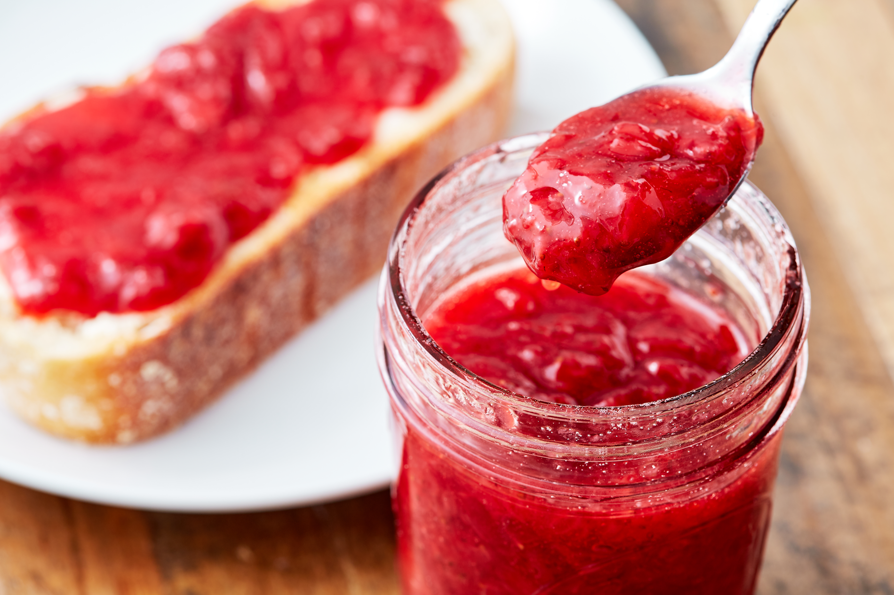

Strawberry Jam

Description
This is a very simple strawberry jam recipe you can easily follow. I find it specially useful if you have strawberries but are afraid they'll eventually go bad.
Ingredients
- 500g of strawberries
- 1 cup of sugar
- 1 lime
Instructions
- In a large pan, add strawberries, sugar and the juice of one lime, and toss all together.
- Bring to a boild, and cook while stirring until thick, about 10 to 12 minutes.
- Ladle into jar and cool. Cover and refrigerate for up to 2 weeks.